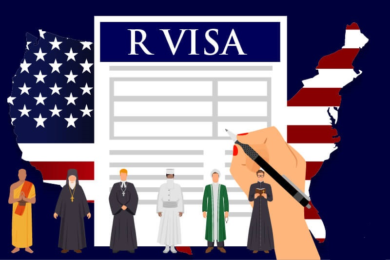
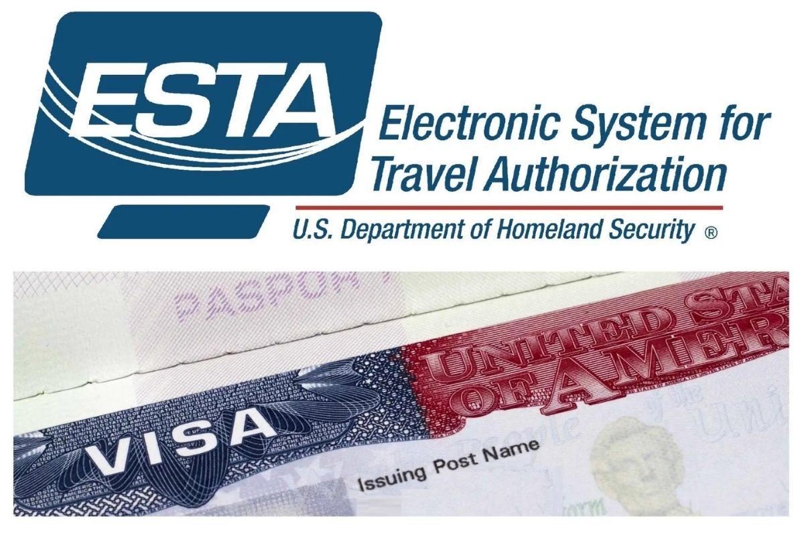

This type of visa applies to those who wish to temporarily enter the United States for business
(category B-1) or tourism (category B-2) or for a combination of both purposes.
Some examples of activities that are allowed with this type of visa are the following:
Business (B-1)
• Consult with business partners
• Attend a scientific, educational, professional or business convention or conference.
• Liquidate a farm
• negotiate a contract
Tourism (B-2)
• Tourism
• Holidays
• Visit with friends or family.
• Tratamiento médico
• Participation in social events hosted by fraternal, social, or service organizations
• Participation by amateurs in musical, sports, or similar events or contests, if not being paid for participating
• Enrollment in a short recreational course of study, not for credit toward a degree
(for example, a two-day cooking class while on vacation)
Tourist and business visa
Student visa
For those people who wish to study in the United States, they must have a student
visa. A person with a student visa may attend:
• University or college
• High School
• Private elementary school
• Seminary
• Conservatory
• Another academic institution, including a language training program
• Vocational or other recognized non academic institution, other than a
language training program

Temporary Religious Worker Visa
Temporary Religious Worker (R-1) visas are for individuals who wish to
enter the United States to temporarily work in religious capacities.
As a religious worker you must:
• Be a member of the same religious denomination as the religious organization
you plan to work for in the United States for at least two years before that
organization files a petition on your behalf;
• Be coming to work as a minister or in a religious vocation or occupation in
the United States;
• Be employed by a non-profit religious organization in the United States (or
an organization affiliated with the religious denomination in the United States);
• work at least part time, an average of at least 20 hours per week.

ESTA and the Visa Waiver Program for Tourists and Business Travelers
International travelers who wish to enter the United States for business or pleasure
and who are citizens of one of the countries participating in the Visa Waiver Program
can obtain a visa waiver. Although citizens of the countries on the list do not need a
visa to come to the United States, they do need to obtain an authorization before beginning
their trip.
Check the list of countries by clicking here